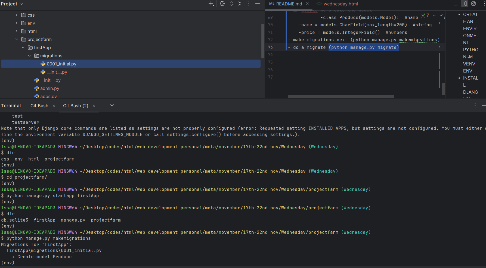
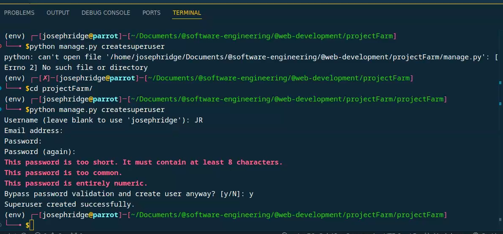

You noticed in the warnings of app not working unless we have a migration. For this we are going to incorporate a schemer. (a class which is a blueprint for all the data
A model is a representation of data
put the class. Under this the state will be a name. The name will have the name of the model and the data type then specify the length
The model class will look like this
class Produce(models.Model): #name of the table
name = models.CharField(max_length=200) #string
price = models.IntegerField() #numbers
Next we make migrations.We use the code below in the terminal
python manage.py make migrations

After doing migration do migrate. Implement the code below in the terminal
python manage.py migrate

To do this we use a django super-user
python manage.py createsuperuser
You will be asked the questions below.
Username (leave blank to use 'issa'): JM (must)
Email address: (not must)
Password: (must)
Password (again): (must)
Django already hash our password
navigate to '/admin' endpoint next
To do this navigate to admin.py file by importing the models and input the code below
admin.site.register(models.Produce)
refresh the admin panel next to see the changes

Use the render to display the html document at views
note While passing data in view function we use a context